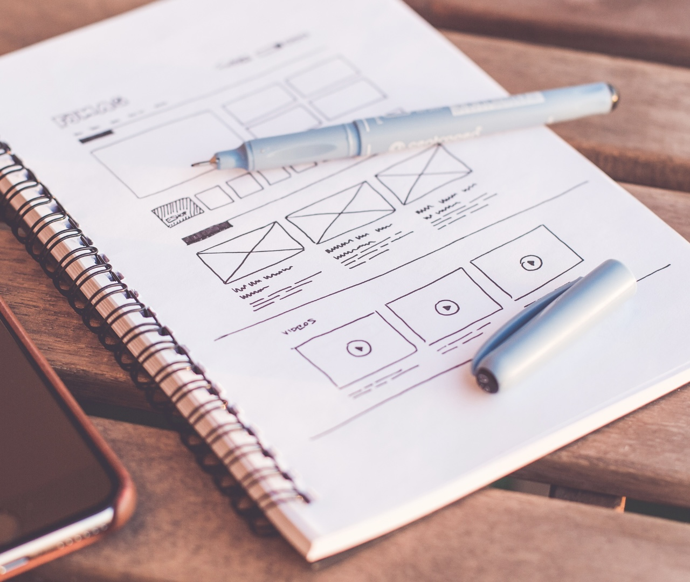
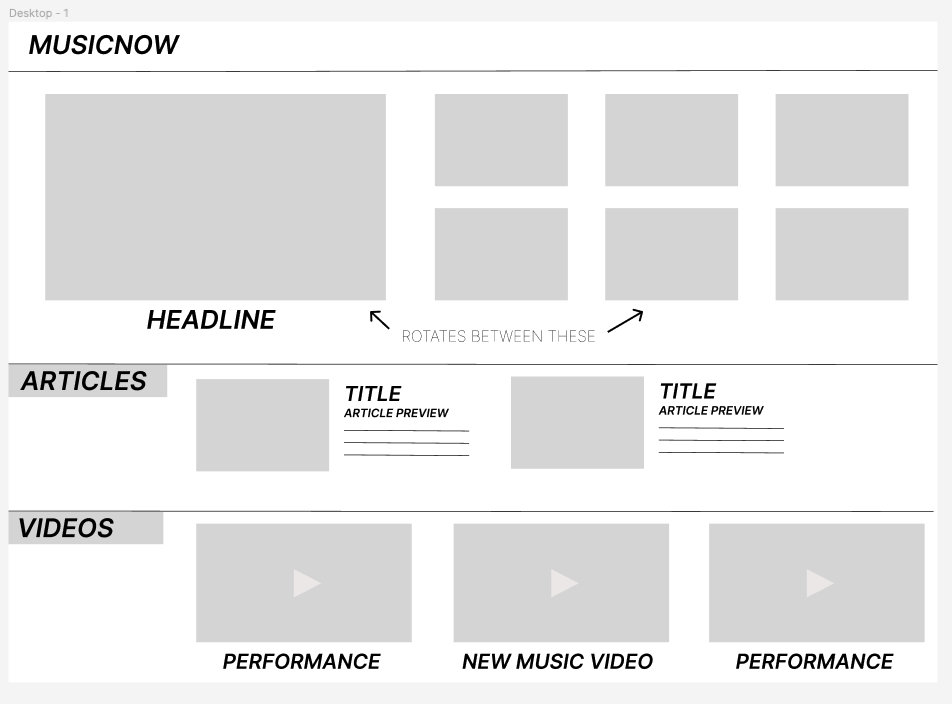

Plan an Event Website
In WEB101, you build a one-page website for an event. This practice helps you plan it. First, you choose an event and answer six short questions about it. Then, you draw a wireframe: a simple sketch of your web page.
- Write a short answer to each question about your event.
- Check the length. Each answer needs at least 30 words.
- Sketch a wireframe to show how your page will look.
Choose your topic
Your website will be about one event. It can be a birthday, a wedding, a graduation, a concert, a sports game, a conference, or any other event. Pick an event you care about. Think about what you enjoy, events you like to go to, or information you want to share with other people.
Then answer the six questions below. Each answer needs at least 30 words. A counter under each box shows how many words you have. This page saves your writing in this browser, so you can come back later.
Questions about your topic
Does it have to be a real event?
No. Your event can be real or imaginary. The example website in the course is for an imaginary hackathon. A hackathon is an event where people work in teams to build a tech project in a short time.
Can I change my topic later?
Yes. You can change your topic as you learn more. For now, choose something that interests you.
What will my website have?
By the end of WEB101, your website will share details about your event, like the date, time, and place. It will also have parts that people can use, like an RSVP form. An RSVP form is a form where people say that they will come to the event.
Sketch a wireframe
A wireframe is a simple drawing of a web page. It shows which parts go on the page and where each part goes. It is a first plan, so it does not need colors, real photos, or perfect lines. You can start with a sketch on paper. Later, you can make a neater version on a computer.
Here is an example. Imagine a website that shares news about music. The biggest news story goes at the top, where people see it first. Other news, articles, and music videos go lower on the page. A first sketch might look like this:

Then you can turn the sketch into a digital wireframe:

Questions about wireframes
How do I start?
Pick the tool that is easiest for you. Paper is fine. Then imagine your finished website and ask yourself:
- What parts do I want on my page?
- Where should each part go?
- What information does a visitor need?
- Where will a visitor find the most important information? Where will they find the less important information?
Is there a right way to draw it?
No. A wireframe is only a first plan. If you can understand it, and it shows your ideas, you did it right.
Can I change my wireframe later?
Yes. Your plan can change as you learn new things or get new ideas.
You answered all six questions.
Great work. You now know a lot about your event and your website. If you made a wireframe, keep a picture of it, so you can look at your plan again later. In WEB101, you turn a plan like this into a real website, a little more each week.
CodePath admissions practice. This page does not affect your application.